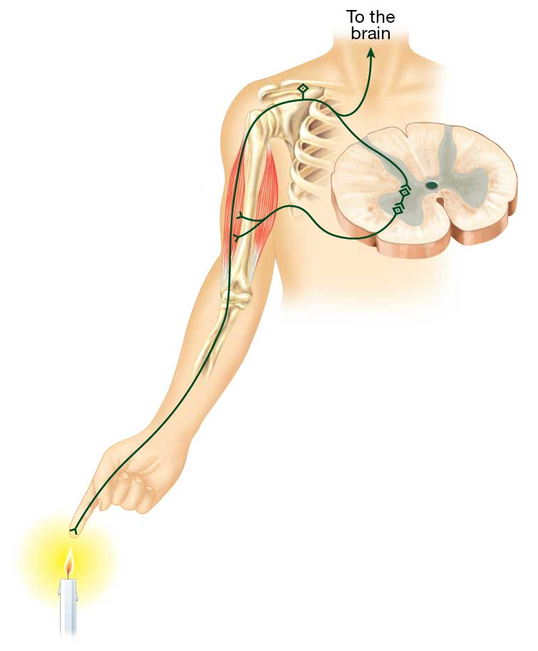

Study the steps involved in the spinal cord reflex, then tap or click “Check Your Understanding” when you are ready to review. Identify the first part of the nervous system involved in the spinal cord reflex.  1. Flame stimulates pain receptors (sensory neurons). 2. Sensory neurons excite interneurons in the dorsal gray portion of the spinal cord. 3. Interneurons excite motor neurons in the ventral gray portion of the spinal cord. 4. Motor nerves exit the spinal cord, excite the muscle, and initiate a movement.